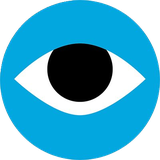
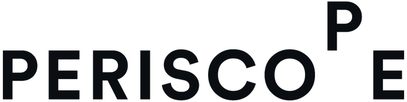

Homepage on Hyper, two slider options
The Hyper homepage with your notes applied: one sign-in, Sleek's big statement and product showcase, shopping by care stage, and a section for dentist recommended and clinical references. Both versions below are the same page except for the slider at the top. Copy is still placeholder.
One large slide across the page, with the arrows and dots on the slide.
View option 01The slider from Sleek: the next and previous slides peek in at the sides, with the arrows and dots below.
View option 02